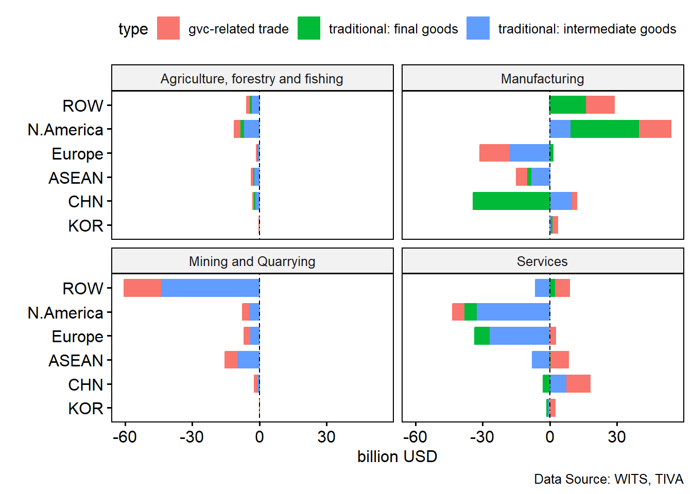
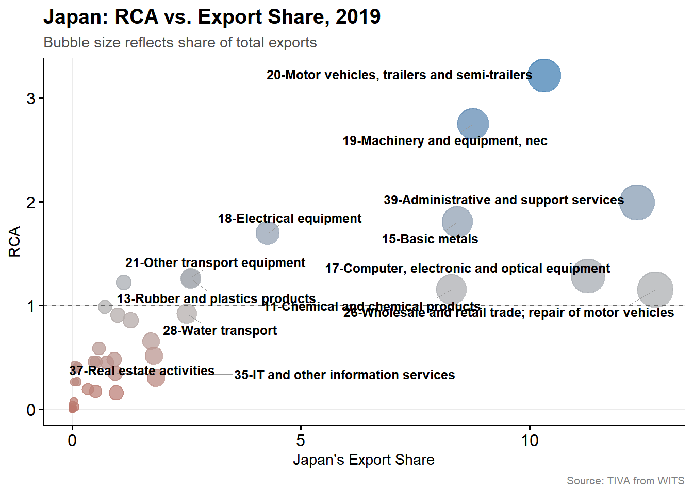
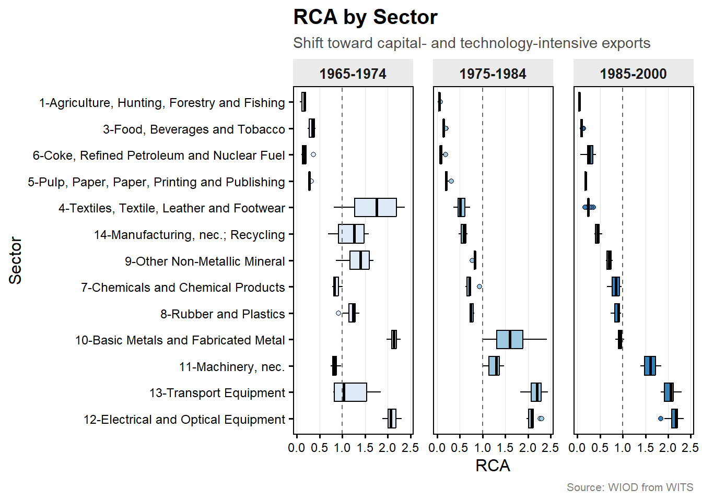
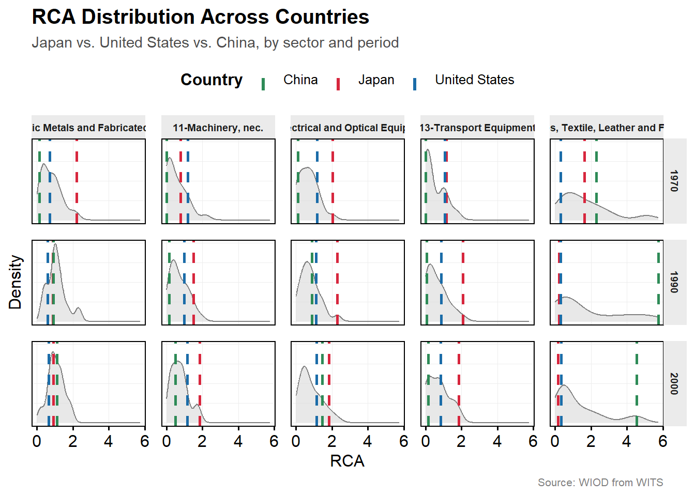

Comparative Advantage: The case of Japan
Introduction
Japan has capital, labor, and skilled labor
In principle, it could grow more of its food
Instead it imports food and exports machinery
Why?
Japan’s trade by partner and sectors
- Import energy, food, raw materials mostly traditional trade
- Japan trade with the N.America/EU
- import services
- export manufacturing goods, surplus with US
- Japan trade with China/ASEAN
- Imports consumer electronics, textiles
- Exports high-tech machinery, components
- “Task sharing” production networks
- services (WTO GATS): production happens with consumption
- cross-border supply
- consumption abroad (tourism, education)
- commercial presence (branch of bank)
- movement of natural persons (Filipino nurse contract in Japan: not migration)
Why countries trade?
Comparative advantage: difference in resources or productivity
Economic of scales: similar countries trade if production get cheaper at larger scale
Absolute vs. Comparative advantage
Being better at producing everything is absolute advantage: does not determine what gets traded.
Comparative advantage is about relative opportunity cost: what you give up to produce more unit of something.
Even a country with no absolute advantage in anything still has a comparative advantage in something.
Explaining Japan’s trade patterns
Productivity/technology differences
Short-run immobility
Capital vs. labor abundance
Productivity differences
Core idea: countries export the good where their opportunity cost is lowest.
Japan’s technology edge in precision manufacturing lowers the opportunity cost of producing autos and electronics relative to its trading partners.
In agriculture, Japan has higher opportunity costs, which driving the import patterns
Short-run immobility
Core idea: some factors (land, sector-specific capital) can’t quickly move between industries.
Japan’s farmland and farmers can’t retrain into auto manufacturing overnight.
Despite comparative disadvantage in agriculture, Japan has long-standing protection policy.
Factor abundance
Core idea: countries export goods that intensively use their abundance factor.
Japan is capital- and technology-abundant relative to land and labor.
Japan export capital-intensive goods (car, electronics) and imports land/labor-intensive goods (food, raw materials)
Which lens fits Japan best?
Exports where relative productivity is highest
Protection of agriculture despite comparative disadvantage
Exports capital-intensive goods, imports land/labor-intensive goods
What drives comparative advantage?
Kowalski (2011, OECD): 55 OECD and emerging economies.
Convergence across countries
- Physical capital
- Education (tertiary, avg. schooling)
- Primary energy supply
- Financial development (credit)
Divergence across countries
- Secondary education
- Regulatory quality, rule of law, corruption
- Import tariffs
Convergence differs by trade relationship
North-North (within OECD): became more homogeneous on most sources
South-South (within non-OECD): gap remains for capital-to-labor ratio and regulatory indicators but narrowed for education, energy supply, financial development.
North-South (OECD vs. non-OECD): Gap widened for physical capital, credit availability, regulatory quality but narrowed for human capital
Revealed comparative advantages
The Balassa index (Balassa, 1965): how much more (or less) a country exports of a good, relative to its share of world trade.
\[ RCA = \frac{\text{country's export share of good X}} {\text{world's export share of good X}} \]
- RCA > 1: the country exports proportionally more of that good than the world average
- effective only within same country among products or same product among countries: higher value indicates a stronger export performance, higher degree of export specialization, and a higher degree of revealed comparative advantage
Questions
In what sectors does Japan have high RCA?
In what sectors does Japan have low RCA?
Japan RCA in 2019

RCA of Japan across period

1965–1974: RCA concentrated in labor-intensive, lower-technology sectors – Highest: Textiles, Textile, Leather and Footwear – Also elevated: Basic Metals and Fabricated Metal; Machinery, nec.
1975–1984: Transition period – Textiles RCA begins declining – Transport Equipment, Machinery, and Electrical/Optical Equipment start rising
1985–2000: RCA concentrated in capital- and technology-intensive sectors – Highest: Transport Equipment; Electrical and Optical Equipment; Machinery, nec. – Textiles falls to the bottom of the distribution
RCA: Japan and Others

Limits of RCA as a measure
RCA reflects actual trade flows, which are already shaped by tariffs, subsidies, and protection, not a “pure” underlying advantage.
Global value chains: a “Japanese” car may contain parts made in many countries, blurring what RCA is really measuring.
Categorization-sensitive: results can shift depending on how narrowly or broadly a “sector” is defined.
Key takeaways
Japan’s trade pattern can be explained by theories on comparative advantages.
RCA gives us an empirical way to confirm the pattern the theories predict.
RCA has its limits
Suggested Readings
- Balassa, B. (1965). Trade Liberalisation and “Revealed” Comparative Advantage. The Manchester School, 33(2), 99–123. https://doi.org/10.1111/j.1467-9957.1965.tb00050.x
- OECD (2011), Globalisation, Comparative Advantage and the Changing Dynamics of Trade, OECD Publishing, Paris, https://doi.org/10.1787/9789264113084-en.